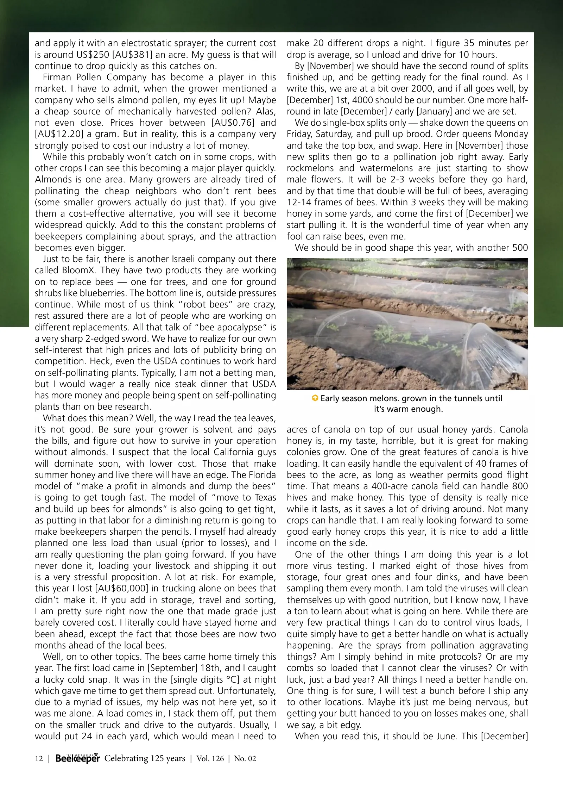

and apply it with an electrostatic sprayer; the current cost
is around US$250 [AU$381] an acre. My guess is that will
continue to drop quickly as this catches on.
Firman Pollen Company has become a player in this
market. I have to admit, when the grower mentioned a
company who sells almond pollen, my eyes lit up! Maybe
a cheap source of mechanically harvested pollen? Alas,
not even close. Prices hover between [AU$0.76] and
[AU$12.20] a gram. But in reality, this is a company very
strongly poised to cost our industry a lot of money.
While this probably won’t catch on in some crops, with
other crops I can see this becoming a major player quickly.
Almonds is one area. Many growers are already tired of
pollinating the cheap neighbors who don’t rent bees
(some smaller growers actually do just that). If you give
them a cost-effective alternative, you will see it become
widespread quickly. Add to this the constant problems of
beekeepers complaining about sprays, and the attraction
becomes even bigger.
Just to be fair, there is another Israeli company out there
called BloomX. They have two products they are working
on to replace bees — one for trees, and one for ground
shrubs like blueberries. The bottom line is, outside pressures
continue. While most of us think “robot bees” are crazy,
rest assured there are a lot of people who are working on
different replacements. All that talk of “bee apocalypse” is
a very sharp 2-edged sword. We have to realize for our own
self-interest that high prices and lots of publicity bring on
competition. Heck, even the USDA continues to work hard
on self-pollinating plants. Typically, I am not a betting man,
but I would wager a really nice steak dinner that USDA
has more money and people being spent on self-pollinating
plants than on bee research.
What does this mean? Well, the way I read the tea leaves,
it’s not good. Be sure your grower is solvent and pays
the bills, and figure out how to survive in your operation
without almonds. I suspect that the local California guys
will dominate soon, with lower cost. Those that make
summer honey and live there will have an edge. The Florida
model of “make a profit in almonds and dump the bees”
is going to get tough fast. The model of “move to Texas
and build up bees for almonds” is also going to get tight,
as putting in that labor for a diminishing return is going to
make beekeepers sharpen the pencils. I myself had already
planned one less load than usual (prior to losses), and I
am really questioning the plan going forward. If you have
never done it, loading your livestock and shipping it out
is a very stressful proposition. A lot at risk. For example,
this year I lost [AU$60,000] in trucking alone on bees that
didn’t make it. If you add in storage, travel and sorting,
I am pretty sure right now the one that made grade just
barely covered cost. I literally could have stayed home and
been ahead, except the fact that those bees are now two
months ahead of the local bees.
Well, on to other topics. The bees came home timely this
year. The first load came in [September] 18th, and I caught
a lucky cold snap. It was in the [single digits °C] at night
which gave me time to get them spread out. Unfortunately,
due to a myriad of issues, my help was not here yet, so it
was me alone. A load comes in, I stack them off, put them
on the smaller truck and drive to the outyards. Usually, I
would put 24 in each yard, which would mean I need to
make 20 different drops a night. I figure 35 minutes per
drop is average, so I unload and drive for 10 hours.
By [November] we should have the second round of splits
finished up, and be getting ready for the final round. As I
write this, we are at a bit over 2000, and if all goes well, by
[December] 1st, 4000 should be our number. One more half-
round in late [December] / early [January] and we are set.
We do single-box splits only — shake down the queens on
Friday, Saturday, and pull up brood. Order queens Monday
and take the top box, and swap. Here in [November] those
new splits then go to a pollination job right away. Early
rockmelons and watermelons are just starting to show
male flowers. It will be 2-3 weeks before they go hard,
and by that time that double will be full of bees, averaging
12-14 frames of bees. Within 3 weeks they will be making
honey in some yards, and come the first of [December] we
start pulling it. It is the wonderful time of year when any
fool can raise bees, even me.
We should be in good shape this year, with another 500
Early season melons. grown in the tunnels until
it’s warm enough.
acres of canola on top of our usual honey yards. Canola
honey is, in my taste, horrible, but it is great for making
colonies grow. One of the great features of canola is hive
loading. It can easily handle the equivalent of 40 frames of
bees to the acre, as long as weather permits good flight
time. That means a 400-acre canola field can handle 800
hives and make honey. This type of density is really nice
while it lasts, as it saves a lot of driving around. Not many
crops can handle that. I am really looking forward to some
good early honey crops this year, it is nice to add a little
income on the side.
One of the other things I am doing this year is a lot
more virus testing. I marked eight of those hives from
storage, four great ones and four dinks, and have been
sampling them every month. I am told the viruses will clean
themselves up with good nutrition, but I know now, I have
a ton to learn about what is going on here. While there are
very few practical things I can do to control virus loads, I
quite simply have to get a better handle on what is actually
happening. Are the sprays from pollination aggravating
things? Am I simply behind in mite protocols? Or are my
combs so loaded that I cannot clear the viruses? Or with
luck, just a bad year? All things I need a better handle on.
One thing is for sure, I will test a bunch before I ship any
to other locations. Maybe it’s just me being nervous, but
getting your butt handed to you on losses makes one, shall
we say, a bit edgy.
When you read this, it should be June. This [December]
12 |
Celebrating 125 years | Vol. 126 | No. 02